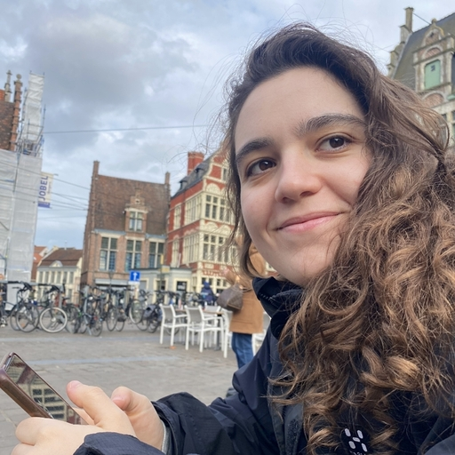

Python, TypeScript, Node.js, SQL, RabbitMQ, Airflow, Docker, C++, Java.
Sara Rodriguez Rojo
Software Engineer
I have a background in Computer Engineering and Business Administration, and I am currently completing an M.A.S. in Artificial Intelligence at Illinois Tech. I have experience building backend and frontend features, data ingestion services, ETL workflows and AI/data projects.

Projects
Selected work
Side projects and academic work.
In progress
GitHubHomer
AI-powered home assistant for meal planning and kitchen management. It is being built around a food database, shopping lists, expiration tracking, preferences, services, tests, prompts, and deployment infrastructure.
AI product
Services
Kubernetes
Raspberry Pi
In progress
GitHubDemand Forecast
Micro-SaaS concept for small e-commerce sellers: upload sales history, generate a four-week product demand forecast, and flag items that may run low.
Python
Forecasting
Backend
Product scope
Computer vision
GitHubYOLOv7 Coordinate Attention
YOLOv7 experiment with Coordinate Attention to explore improvements in small object detection.
Deep learning
Object detection
Computer vision
GitHubYOLOv0
Educational notebook implementing the core YOLO idea and a simplified object detection model.
Notebook
ML fundamentals
Graphics
GitHubAsteroid Field
C++ and OpenGL 3D scene with procedural asteroids, instanced rendering, tessellation, and frustum culling.
C++
OpenGL
Forecasting
GitHubTime Series Benchmark
R pipeline comparing statistical and machine learning forecasting models on the M4 Monthly dataset.
R
Forecasting
Experience
Work
Oct 2024 - Jul 2025
Consultant, Junior Associate | Oxigent Technologies
Built backend and frontend features in an international Agile team. Developed an event-driven email alert microservice with Node.js and RabbitMQ, processing 25,000+ monthly events for enterprise energy clients.
Feb 2024 - Aug 2024
Software Developer Intern | DNV Green Power Monitor
Migrated data ingestion microservices from TypeScript to Python. Built ETL workflows with Apache Airflow and worked on renewable energy dashboards using Node.js, Angular, and MongoDB.
Education
Education
Aug 2025 - Aug 2026
M.A.S. in Artificial Intelligence
Illinois Institute of Technology
GPA: 4.0/4.0. Advanced AI, Time Series Analysis and Forecasting, Machine Learning.
Sep 2024 - Aug 2026
M.S. in Computer Engineering
Polytechnic University of Madrid
GPA: 3.4/4.0. Dual Master's Degree Program.
Sep 2019 - Jul 2024
Dual Degree in Computer Engineering and Business Administration
Polytechnic University of Madrid
GPA: 3.5/4.0.
Contact